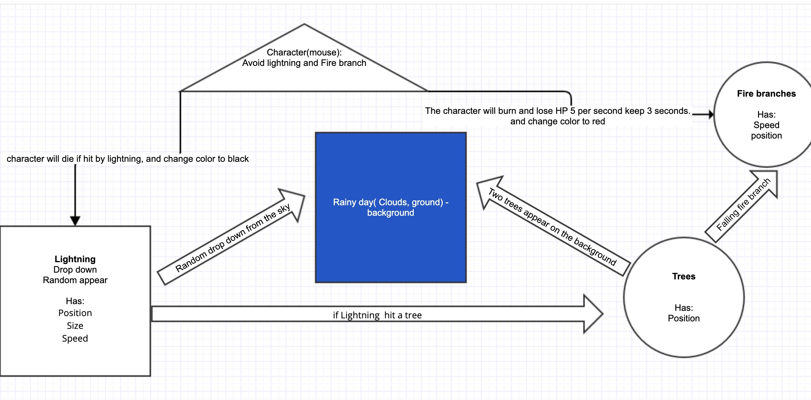

Project 01 - Lightning

I decide to work on the lightning topic because it is one of the most spectacular natural phenomena. It will be cool if I can use coding to recreate it. In the system, the user will use a mouse to control the character to avoid lightning and fire tree branches. The most complicated code I have to deal with in this project is to show lightning and let the system know about the tree's lightning collision. Technically, the lightning and tree have some similar parts. Both of them have random branches. But visually, lightning is an active element. Trees are static elements. In nature, lightning can burn the tree and hurt people. So I decided to show these interactions in my system. The character will die immediately when lightning hits people. The fire tree branches will occur and drop down when lightning hits the tree. The fire branches also can burn people but will not kill people immediately. In the future, thunder should be considered in this project, normally lightning always occurs with thunder. So I hope I can add sound to my system to make it more realistic.
Programming
This is the first time using processing to build interactive prototyping. It is a bit hard for me to build the elements. I find some tutorials it is hard to understand initially, but I keep watching more tutorials. It is kind of makes me understand the processing.
And there are so many elements in the project. So I have to split those elements into different files. It makes me also understand how to use the class function in processing.